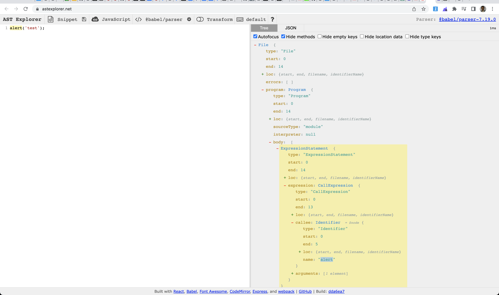

eslint custom rules
Here we will explain how to setup a custom rule for eslint in two methods
Use case
- We like want to warn the developers about using
alert()in their code
Writing the rule
- Prepare the offending code
alert('test')
- Use AST Explorer to find out the node details

- We need to check for
node.callee.name === 'alert'
as per the AST
- Our rule should be something like this
- meta : for metadata about the rule
- create: action part of the rule
- here we check for
node.callee.name === 'alert'and report the developer that with a message:Using alert() is not recommendedusing thecontextprovided by the eslint
- here we check for
module.exports = {
meta: {
type: 'suggestion',
docs: {
description: 'Warn the alert function used in the code',
category: 'Best Practices',
recommended: true,
},
},
create: function (context) {
return {
CallExpression(node) {
if (node.callee.name === 'alert') {
context.report({
node,
message: 'Using alert() is not recommended',
});
}
},
};
},
};
Project Setup
Create project: custom-rules-demo
~/eslint >mkdir custom-rules-demo
~/eslint >cd custom-rules-demo
~/eslint/custom-rules-demo >npm init @eslint/config
✔ How would you like to use ESLint? · problems
✔ What type of modules does your project use? · esm
✔ Which framework does your project use? · none
✔ Does your project use TypeScript? · No / Yes
✔ Where does your code run? · browser
✔ What format do you want your config file to be in? · JavaScript
A config file was generated, but the config file itself may not follow your linting rules.
Successfully created .eslintrc.js file in /Users/mchinnappan/eslint/custom-rules-demo
Look at .eslintrc.js
~/eslint/custom-rules-demo >cat .eslintrc.js
module.exports = {
"env": {
"browser": true,
"es2021": true
},
"extends": "eslint:recommended",
"overrides": [
],
"parserOptions": {
"ecmaVersion": "latest",
"sourceType": "module"
},
"rules": {
}
}
Make a folder for rules
~/eslint/custom-rules-demo >mkdir rules
~/eslint/custom-rules-demo >touch rules/no-alert.js
Content of the rules/no-alert.js
~/eslint/custom-rules-demo >cat rules/no-alert.js
module.exports = {
meta: {
type: 'suggestion',
docs: {
description: 'Warn the alert function used in the code',
category: 'Best Practices',
recommended: true,
},
},
create: function (context) {
return {
CallExpression(node) {
if (node.callee.name === 'alert') {
context.report({
node,
message: 'Using alert() is not recommended',
});
}
},
};
},
};
Create app.js
~/eslint/custom-rules-demo >touch app.js
~/eslint/custom-rules-demo >cat app.js
console.log('hello world!');
alert('this is an alert');
Add an entry in the .eslintrc.js for our custom rule no-alert
"rules": {
"no-alert": ["warn"]
}
~/eslint/custom-rules-demo >vi .eslintrc.js
~/eslint/custom-rules-demo >cat .eslintrc.js
module.exports = {
"env": {
"browser": true,
"es2021": true
},
"extends": "eslint:recommended",
"overrides": [
],
"parserOptions": {
"ecmaVersion": "latest",
"sourceType": "module"
},
"rules": {
"no-alert": ["warn"]
}
}
Run the eslint with our custom rule
~/eslint/custom-rules-demo >eslint --rulesdir rules app.js
Results
/Users/mchinnappan/eslint/custom-rules-demo/app.js
1:28 error Extra semicolon semi
2:1 warning Using alert() is not recommended no-alert
2:26 error Extra semicolon semi
✖ 3 problems (2 errors, 1 warning)
2 errors and 0 warnings potentially fixable with the `--fix` option.
Fixing and running eslint
vi app.js
cat app.js
console.log('hello world!')
- Running the modified code
eslint --rulesdir rules app.js
Taking care of assertions like in JEST expect(1).toBe(1)
cat .eslintrc.js
module.exports = {
"env": {
"browser": true,
"es2021": true,
"jest": true
},
"extends": ["eslint:recommended"],
"overrides": [
],
"parserOptions": {
"ecmaVersion": "latest",
"sourceType": "module"
},
"plugins": ["jest"],
"rules": {
"no-alert": ["warn"],
"no-literal-expect": ["warn"]
}
}
cat rules/no-literal-expect.js
module.exports = {
meta: {
type: 'problem',
docs: {
description: 'disallow hardcoded expect statements',
category: 'Possible Errors',
recommended: true
},
schema: []
},
create: function (context) {
return {
CallExpression(node) {
if (
node.callee.type === "Identifier" &&
node.callee.name === "expect" &&
node.arguments.length === 1 &&
node.arguments[0].value === 1
) {
context.report({
node,
message: `${context.id}: Using expect(1).toBe(1) is not recommended`,
});
}
},
};
}
}
Testing
cat app.js
alert('hello')
expect(1).toBe(1)
const x = 100
expect(x).to(100)
eslint --rulesdir=rules app.js
1:1 warning Using alert() is not recommended no-alert
2:1 warning no-literal-expect: Using expect(1).toBe(1) is not recommended no-literal-expect
✖ 2 problems (0 errors, 2 warnings)
Using plugin eslint-plugin-mohanc-eslint-rules
Create a new project
- Note: In an existing project you do not need this step
mkdir eslint-testing
cd eslint-testing
npm init -y
Wrote to /private/tmp/eslint-testing/package.json:
{
"name": "eslint-testing",
"version": "1.0.0",
"description": "",
"main": "index.js",
"scripts": {
"test": "echo \"Error: no test specified\" && exit 1"
},
"keywords": [],
"author": "",
"license": "ISC"
}
Install the plugin for the custom rules
- Note: This step is required for an existing project as well
npm i eslint-plugin-mohanc-eslint-rules
added 1 package, and audited 2 packages in 922ms
found 0 vulnerabilities
Look at the package.json
cat package.json
{
"name": "eslint-testing",
"version": "1.0.0",
"description": "",
"main": "index.js",
"scripts": {
"test": "echo \"Error: no test specified\" && exit 1"
},
"keywords": [],
"author": "",
"license": "ISC",
"dependencies": {
"eslint-plugin-mohanc-eslint-rules": "^0.0.2"
}
}
Create .eslintrc
- NOTE: In an existing project just add/update the line specific to "plugins"
vi .eslintrc
cat .eslintrc
{
"parserOptions": {
"ecmaVersion": 2021,
"jest": true
},
"rules": {
"mohanc-eslint-rules/no-alert": "warn",
"mohanc-eslint-rules/no-literal-expect": "warn"
},
"plugins": ["mohanc-eslint-rules"]
}
Create the sample code (app.js) to test these custom rules
vi app.js
cat app.js
alert('hello');
expect(1).toBe(1);
const x = 100;
expect(x).toBe(100);
Run the eslint to lint this file (app.js)
/tmp/eslint-testing >npx eslint app.js
/private/tmp/eslint-testing/app.js
1:1 warning Using alert() is not recommended mohanc-eslint-rules/no-alert
2:1 warning mohanc-eslint-rules/no-literal-expect: Using expect(1).toBe(1) is not recommended mohanc-eslint-rules/no-literal-expect
✖ 2 problems (0 errors, 2 warnings)
How it shows in VSCode (click on the image to view the full view)
- Demo
{kind=link}